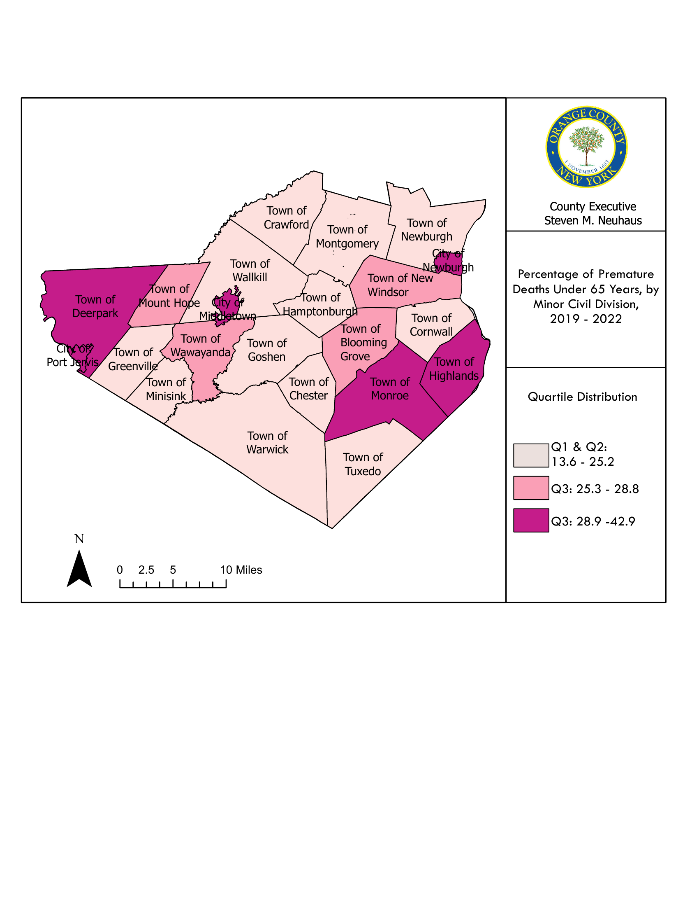

| 2020 | 2021 | 2022 | 2023 | Total 2020-2023 | ||||||
|---|---|---|---|---|---|---|---|---|---|---|
| # | Rate | # | Rate | # | Rate | # | Rate | Total # | Average Rate | |
| Total | 3,392 | 887.8 | 3,020 | 758.3 | 3,077 | 766.9 | 2,860 | 708.2 | 12,349 | 780.3 |
| Age Intervals | ||||||||||
| <1 | 16 | 332.8 | 18 | 351.2 | 15 | 302.1 | 17 | 323.6 | 66 | 327.4 |
| 1–9 | 9 | 19.2 | 8 | 16.3 | 7 | 14.5 | 13 | 26.2 | 37 | 19.1 |
| 10–19 | 13 | 22.7 | 8 | 13.3 | 9 | 14.5 | 6 | 9.7 | 36 | 15.1 |
| 20–24 | 28 | 98.2 | 21 | 72.0 | 26 | 87.7 | 11 | 38.4 | 86 | 74.1 |
| 25–34 | 73 | 162.6 | 57 | 122.3 | 56 | 118.2 | 48 | 100.2 | 234 | 125.8 |
| 35–44 | 98 | 216.7 | 101 | 211.6 | 87 | 178.6 | 87 | 174.9 | 373 | 195.5 |
| 45–54 | 174 | 332.3 | 192 | 359.8 | 159 | 303.7 | 150 | 291.2 | 675 | 321.7 |
| 55–64 | 395 | 811.1 | 392 | 762.7 | 392 | 765.9 | 344 | 667.8 | 1,523 | 751.9 |
| 65–74 | 663 | 2,102.6 | 599 | 1,789.7 | 620 | 1,831.6 | 546 | 1,567.2 | 2,428 | 1,822.7 |
| 75–84 | 788 | 5,344.2 | 728 | 4,770.6 | 790 | 4,986.1 | 752 | 4,586.2 | 3,058 | 4,921.8 |
| 85+ | 1,135 | 15,876.3 | 896 | 13,151.3 | 916 | 13,048.4 | 886 | 13,206.1 | 3,833 | 13,820.6 |
| Race and Ethnicity | ||||||||||
| Non-Hispanic White | 2,626 | 1,088.8 | 2,347 | 946.8 | 2,393 | 986.2 | 2,255 | 2,249.0 | 9,621 | 1,317.7 |
| Non-Hispanic Black | 310 | 806.2 | 277 | 697.2 | 290 | 691.4 | 265 | 259.0 | 1,142 | 613.4 |
| Hispanic | 376 | 468.5 | 310 | 363.2 | 305 | 340.8 | 267 | 267.0 | 1,258 | 359.9 |
| Other | 80 | 360.6 | 86 | 339.7 | 89 | 327.7 | 73 | 85.0 | 328 | 278.3 |
| ZIP Code | ||||||||||
| 10940 | 512 | 1,035.8 | 496 | 973.8 | 480 | 925.7 | 430 | 809.8 | 1,918 | 936.3 |
| 10950 | 226 | 1,688.6 | 167 | 1,158.5 | 194 | 1,337.7 | 163 | 1,104.3 | 750 | 1,322.3 |
| 12550 | 561 | 2,103.9 | 459 | 1,712.3 | 468 | 1,707.5 | 406 | 1,487.2 | 1,894 | 1,752.7 |
| 12771 | 139 | 964.7 | 169 | 1,138.8 | 166 | 1,148.5 | 157 | 1,094.5 | 631 | 1,086.0 |
7 Mortality
Mortality measures the frequency and distribution of deaths in a population and serves as a summary indicator of community health and health system performance. In this section, mortality is presented across three complementary lenses: all-cause mortality (overall burden and distribution of deaths), leading causes of death (the primary conditions and injuries driving mortality), and premature death (deaths occurring earlier than expected, reflecting preventable and inequitable loss of life).
7.1 All-Cause Mortality
Across 2020–2023, Orange County recorded 12,712 deaths, with the age-adjusted all-cause mortality rate declining from 887.8 per 100,000 in 2020 to 708.2 in 2023. This is consistent with the elevated mortality conditions observed during the first year of the COVID-19 pandemic followed by improvement in subsequent years Table 7.1.
Mortality also differed by sex, with males consistently experiencing higher age-adjusted all-cause mortality than females from 2020–2023 Figure 7.3.
Geographic differences were evident across the four cities of Orange County Figure 7.2. Over 2020–2023, rates ranged from 936.3 per 100,000 in ZIP 10940 (lowest) to 1,752.7 in ZIP 12550 (highest), with 10950 (1,322.3) and 12771 (1,086.6) falling between these extremes. There was a pattern of improvement from 2020–2023: 12550 remained highest each year but declined from 2,103.9 (2020) to 1,487.2 (2023); 10940 decreased from 1,035.8 to 809.8; 10950 was reduced from 1,688.6 to 1,203.3; and 12771 stayed comparatively stable, remaining near ~1,100 across the period.
Differences by race and ethnicity were also observed in all-cause mortality. Age-adjusted comparisons indicate a persistent inequity burden, with Non-Hispanic Black residents experiencing the highest age-adjusted mortality rate in Orange County (2020–2022) Figure 7.1.
NoteSource
Special request from NYSDOH Bureau of Vital Records, July 2025
Note
Note: See Data Note section for more information regarding this request. Birth and death data for Orange County excludes events recorded in NYC. All rates use ACS 5-year population estimates, except for the ages under 1 year and 1-9 years, which are based on crude live births in Orange County.
| Region/County | Total | Non-Hispanic White | Non-Hispanic Black | Non-Hispanic Asian/Pacific Islander | Hispanic |
|---|---|---|---|---|---|
| Orange | 781.0 | 790.7 | 820.7 | 487.8 | 654.7 |
| NYS excl NYC | 773.0 | 772.2 | 945.0 | 413.7 | 594.1 |
| NYS | 735.0 | 728.3 | 871.2 | 436.7 | 649.3 |
NoteSource
NYS County Health Indicators by Race and Ethnicity, August 2025 sourced from Vital Statistics of NYS https://www.health.ny.gov/community/health_equity/reports/county/
Note
Note: The 2018 population estimates are also used to calculate rates for 2019, 2020, and 2021.
| Year | 10940 | 10950 | 12550 | 12771 |
|---|---|---|---|---|
| 2020 | 1,035.8 | 1,688.6 | 2,103.9 | 964.7 |
| 2021 | 973.8 | 1,158.5 | 1,712.3 | 1,138.8 |
| 2022 | 925.7 | 1,337.7 | 1,707.5 | 1,148.5 |
| 2023 | 809.8 | 1,104.3 | 1,487.2 | 1,094.5 |
NoteSource
Special request from NYSDOH Bureau of Vital Records, July 2025
Note
Note: See Data Note section for more information regarding this request. Birth and death data for Orange County excludes events recorded in NYC. All rates use ACS 5-year population estimates, except for the ages under 1 year and 1-9 years, which are based on crude live births in Orange County.
| Sex | 2020 | 2021 | 2022 | 2023 |
|---|---|---|---|---|
| Males | 982.2 | 842.9 | 827.9 | 767.5 |
| Females | 680.7 | 609.2 | 616.3 | 582.8 |
NoteSource
Vital Statistics of NYS, July 2025
Note
Note: See Data Note section for more information regarding this request. Birth and death data for Orange County excludes events recorded in NYC. All rates use ACS 5-year population estimates, except for the ages under 1 year and 1-9 years, which are based on crude live births in Orange County.
7.2 Leading Causes of Death
In 2022, heart disease and cancer were the two leading causes of death in Orange County by both count and age-adjusted rate, followed by unintentional injury, COVID-19, and chronic lower respiratory disease (CLRD). This profile reflects the combined influence of chronic disease, injury, and infectious disease Table 7.5.
Cause patterns differ when examined by sex from 2020–2022 Table 7.6. Over that period, unintentional injury and suicide contributed disproportionately to male mortality, while Alzheimer’s disease and cerebrovascular disease (stroke) appeared more prominently among females, alongside the continued dominance of heart disease and cancer for both sexes.
| All Deaths | #1 Cause of Death | #2 Cause of Death | #3 Cause of Death | #4 Cause of Death | #5 Cause of Death | ||||||
|---|---|---|---|---|---|---|---|---|---|---|---|
| Orange County | Heart Disease | Cancer | Unintentional Injury | COVID-19 | CLRD | ||||||
| Count | 3,222 | 653 | 609 | 253 | 231 | 125 | |||||
| Rate | 745.2 | 150.6 | 132.4 | 62.2 | 53.4 | 29.6 | |||||
| NYS Excl NYC | Heart Disease | Cancer | COVID-19 | Unintentional Injury | CLRD | ||||||
| Count | 113,465 | 26,215 | 21,762 | 6,666 | 6,666 | 4,602 | |||||
| Rate | 744.0 | 166.4 | 137.3 | 54.8 | 42.3 | 28.8 | |||||
| NYS | Heart Disease | Cancer | COVID-19 | Unintentional Injury | Cerebrovascular Disease |
||||||
| Count | 173,986 | 43,166 | 32,584 | 11,174 | 10,820 | 6,574 | |||||
| Rate | 679.6 | 163.7 | 123.7 | 42.7 | 50.6 | 25.1 | |||||
NoteSource
Vital Statistics of NYS, November 2025 https://apps.health.ny.gov/public/tabvis/PHIG_Public/lcd
Note
Note: Premature death includes deaths occurring before the age of 75.
| Cause of Death | Number of Deaths | ||
|---|---|---|---|
| Male | Female | Total | |
| All Causes | 6,235 | 6,114 | 12,349 |
| Disease of the Heart | 1,409 | 1,214 | 2,623 |
| Malignant Neoplasms | 1,165 | 1,217 | 2,382 |
| Unintentional Injury | 793 | 366 | 1,159 |
| COPD/CLRD | 222 | 271 | 493 |
| Cerebrovascular Disease | 176 | 236 | 412 |
| Alzheimer's Disease | 106 | 292 | 398 |
| Diabetes | 155 | 146 | 301 |
| Pneumonia | 136 | 109 | 245 |
| Septicemia | 128 | 135 | 263 |
| Suicide | 185 | 42 | 227 |
| Cirrhosis of Liver | 84 | 39 | 123 |
NoteSource
Special request from NYSDOH Bureau of Vital Records, July 2025
Note
Note: See Data Note section for more information regarding this request. Birth and death data for Orange County excludes events recorded in NYC. All rates use ACS 5-year population estimates, except for the ages under 1 year and 1-9 years, which are based on crude live births in Orange County.
7.3 Premature Death
Premature death highlights deaths occurring earlier in the life course and is used as an indicator of preventable mortality and health inequities. In Orange County, premature death measures consistently indicated disproportionate burden among historically underserved populations, including elevated premature mortality among Non-Hispanic Black and Hispanic residents Figure 7.5. In addition, premature death is not proportionate across communities, with some municipalities experiencing substantially higher percentages than others, with the City of Newburgh being the highest at 42.9%.

NoteSource
NYS Prevention Agenda Tracking Dashboard, October 2025, sourced from Vital Statistics of NYS https://apps.health.ny.gov/public/tabvis/PHIG_Public/pa/
| Region/County | Total | Non-Hispanic White | Non-Hispanic Black | Non-Hispanic Asian/Pacific Islander | Hispanic |
|---|---|---|---|---|---|
| Orange | 45.8 | 41.3 | 63.4 | 61.3 | 57.9 |
| NYS excl NYC | 40.8 | 37.3 | 61.6 | 46.5 | 60.8 |
| NYS | 42.9 | 36.6 | 58.6 | 42.9 | 55.0 |
NoteSource
NYS County Health Indicators by Race and Ethnicity, November 2025 sourced from Vital Statistics of NYS https://www.health.ny.gov/community/health_equity/reports/county/orange.htm
Note
Note: Premature death includes deaths occurring before the age of 75. The 2018 population estimates are also used to calculate rates for 2019 and 2020. Later years are from the most recent Vintage estimates.